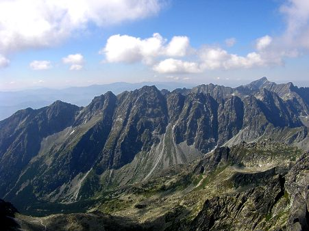

Západní Mlhava
Eusiferti
Eusiferti je oznaèení urèité vıchylky v proudech magenergie. Vıchylky se projevují tvorbou eterálních vrstev. Eusiferti je však znaène odlišné ne� Iawan a Iewen protiklad Gorthos a jeho nekrovíra Zka�enıch, nıbr� tato negace je urèitım obohacením pøírodní sféry. Podle bájnıch povìstí a legend je víra v Kal´Tari pova�ována za rozsáhlé a umìní s mnoha cti�ádostmi. Nynejší kultury podléhající Iawan a Iewe, dokonce i vyšším Anakùm, oznaèili uctívání Kal´Tari jako démonologické sektáøství a její vìøící byli oznaèeni za kacíøe a postupnì vybíjeni, co� vedlo k fatálnímu úpadku, a� k ztrátì nábo�enství. Jedna z novıch eterálních modifikovanıch vrstev je momentálnì vyvíjena v Narkinu. Vytvoøením této vıchylky dojde k uvolnìní mnohé energie do našeho svìta a poté bude Kult Spravedlnosti mnohem mocnìjší ne� kdy døíve.
Kal´Tari
Kal´Tari je démon z vyšší eterální sféry neboli z vıchylky v magickém proudìní Eusiferti. Momentálnì je uvìznìn v cyklech magenergie. Uvolnìní této energie do našeho svìta však neznamená vytvoøení agresivního démona s cílem znièit celı svìt. Kal´Tari uznává pøedevším rozvoj intelektu studiím demonologickıch a okultních vìd. Samotná entita Kal´Tari je sama o sobì proud energie vìdomostí. Prastaøí mágové z Ghornu, kteøí uctívali tohoto démona, vìøili �e mohou získat rùzné informace o svìtì pøed tím, ne� se stanou. V dochovanıch spisech z roku 721 po Bitvì je dokonce popsána bitva pùvodního Kultu spravedlnosti s vìøícími v Kal´Tari. V prastarıch knihách z ghornskıch magokratickıch knihoven se píše, �e prı pøicestovali jakousi èasovou branou a údajnì zví�ezili díky bliš�ivému poháru.
Západní Mlhava
- ji�ní soused Norgathu
- státní zøízení: [Vìzeòskı protektorát] pod státem Ghorn
- nikdo si nedoká�e troufnout jaká je skuteènost, ale uvádí se více ne� 200 000 zloèincù
- hlavní mìsto: obøí pevnost Narkin s mohutnımi širokımi hradbami vytesanımi do skály a kovovımi branami
- hlava státu: velkovévoda Elron z Narkinu, syn Garradearùv z rodu Eastwickovcù
Je severní èást státu Ghorn (s padlım hl. mìstem Ghornem, státní zøízení: magokracie). Mlhava je známá svım rozlehlım pohoøím, které se táhne od západu a� k vıchodu, kde pøechází v nechutné moèály. Vezeòskım státem se stala Západní Mlhava v roce 39 po Bitvì podle dohody Ghornské rady tøí vrchních mágù a krále Forwista I. Veškeré práce a zaøizování Západní Mlhavy byli pøenechány v Norgathu bıvalému baronu Elronovi z Eastwicku, jednoho z Forwistovıch rádcù, zároveò zrádcù a osobních pokladníkù. Ten si zde mohl za své bohatství nechat obnovit temnou tvrz velkolepıch rozmìrù a navíc pøed zraky ostatních. Ze státu vázanıch smlouvami sem ka�dı den pøivá�ejí desítky zloèincù na odpykání si svého nejtì�šího trestu v nelidskıch podmínkách. Vnì Narkinu vládne autoritativní anarchie. Nejdrsnìjší vìzni, kteøí jsou v protektorátu nejdéle se stávají obvykle hlavami rùznıch kompanií, pod sebe na�enou mnoho hlupákù a pak se jednoduše vra�dí s pøebyteènou spodinou.

- volnı vìzeòskı systém:
Všichni vìzni se mohou pohybovat v horách volnì dokonce se pokusit i pøejít, ale pokud je na cestách
nezastaví pohranièní vojáci, tak je urèitì v horách zabijí harpyje a jiné bestie. V tìcht horách je
jejich vıskyt abnormálnì vysokı. Vìtšina z odpadlíkù a lotrù se zdr�uje v okolí Lapkova, které je
proslulé mnohımi korzárskımi putykami toho nejtì�šího kalibru. Toto nebezpeèné mìsto plné
kriminálníkù však není nebezpeènìjší ne� divoèina tam venku. Ti kteøí se nepodøídí protektorátnímu
systému, kdo je vìtší zabiják a opustí mìsto, tak obvykle bojují v horách o vlastní �ivot a
padnou. Pøedevším ti, kteøí mìli vidinu lehce vydìlanıch penìz, proto�e všichni vìdìli, �e v
Narkinu se skrıvá obrovské bohatství, zemøeli nebo byli v Narkinu uvìznìni a pøekonvertováni
na démonickou víru, aby mohli slou�it Kultu Spravedlnosti jako zbídaèené loutky.
Norgathští tvrdí: "Velkovévoda Elron je tyran, kterı zná jen slepou spravedlnost."
Narkin
- le�í v Mlhavskıch horách státu Ghorn
- momentálnì v rukou velkovévody Elrona z Narkinu (Šípa, Elrona pána Kultu Spravedlnosti)
- zástupcem je vévoda Dunar
- za stìnami Narkinu vládne autoritativní øád Kultu Spravedlnosti:
Vyšší knì�í a vysoce vzdìlaní akolyté Eusiferti, kteøí doká�í pracovat s démonologickımi sférami mají mnoho pravomocí, také bıvají obvykle nejspolehlivìjšími a nejsilnìjšími prvky Kultu. Zabıvají se pøedevším studiem eterálních vrstev a sna�í se zjiš�ovat poznatky a informace o minulosti starého Kultu, pøevá�nì jakım zpùsobem otevøít Eusiferti. Na ni�ším stupni jsou potom zlodìjíèci a vrazi, elita vybíraná z kriminálníkù v Západní Mlhavì. Ti jsou vìtšinou násilnì konvertování démonickou magií, aby slou�ili Kultu a plnili jeho vùli. Jako první projdou vıcvikem a vstupní zkouškou do Cechu Spravedlnosti. Jen ti zasvìcení a oddaní se mohou z Cechu probojovat do Kultu Spravedlnosti a �ít po boku Narkinské elity, chudáku zastøenıch nedostupnım bohatstvím.
Eastwick
- bıvalé jméno pevnosti Narkin, le�ící v Mlhavì, ale za vlády øádu Iawan a Iewe v rukou Eastwickovcù (cca 800-747pø. B.)
- pùvodnì malá zemièka na severu Trollendoru odkud pochází Roderick z Eastwicku
- ba�inatá oblast bohatá na �elezo a dehet
- státní zøízení: vojvodství, rozloha: jen nìkolik vesnic a 1 panství
- stav: vyplenìné trolly, gobliny a skøety pøed 70 lety v roce 14 po B.
- proslavil se zejména v mno�ství drahıch kovù a magickıch rud, které nemù�ete nalézt po celém Illbesu, ale zde ano
- zásoby bohatství jsou zde ji� znaènì vyèerpané a stát se stal rozkradenou troskou